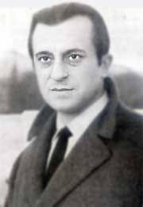

José Agustín Goytisolo

Libros:
Bajo tolerancia

Poemas:
Palabras para Julia
Cantautor/a:
Paco Ibañez
Paco Ibañez
Final de un adiós

Poemas:
La noche le es propicia
Poema recitado:
A veces gran amor

Poemas:
Se oyen los pajaros
Poema recitado:
Voz de José Agustín Goytisolo
Voz de José Agustín Goytisolo